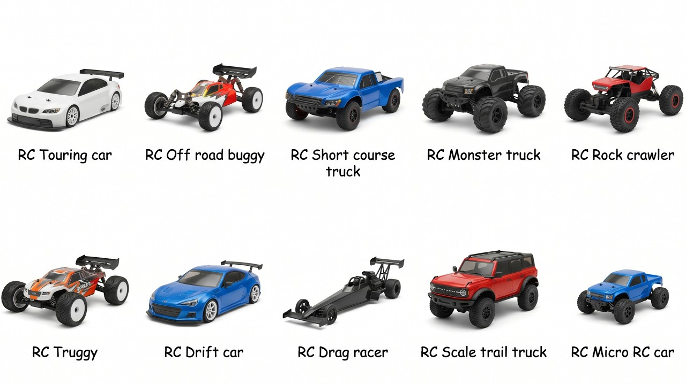
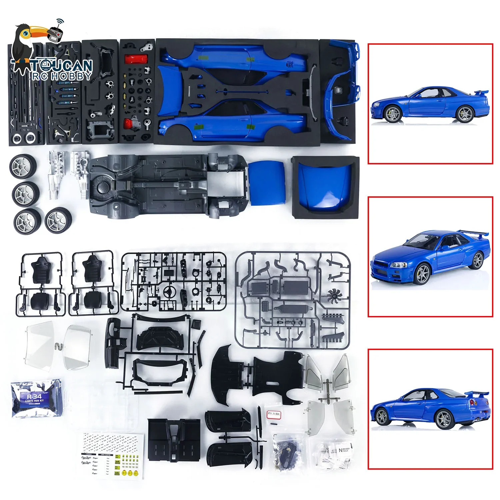
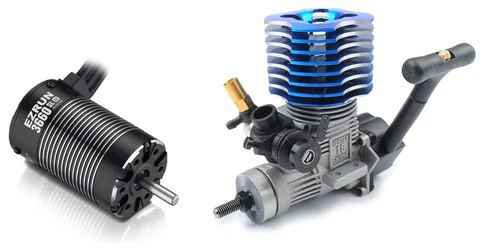
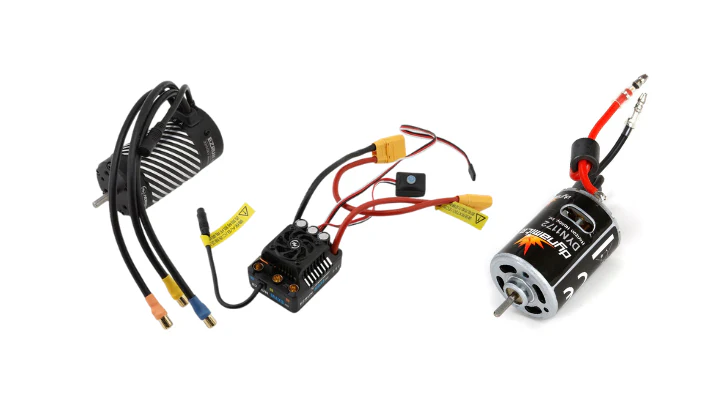
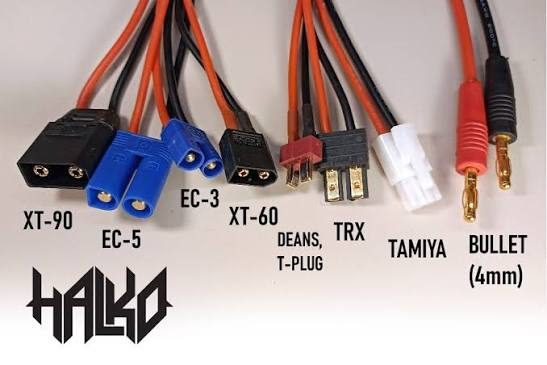
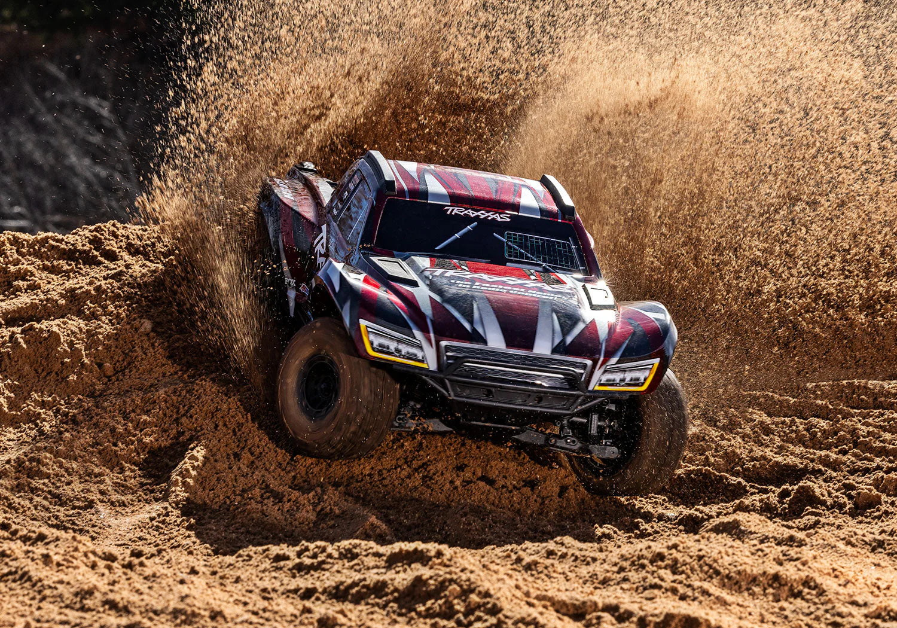

Welcome to Race, Build, Learn, RC!
The goal of this site is to teach the minimum basics to the hobby of RC cars and give you insight into the two worlds of RC cars. To start, here are the basic decisions that come with purchasing any RC car, whether it's your first or 10th vehicle. Because this is a introduction site for beginners, some of these decisions have been made for you. I still spell out these decisions for you so you can go out and find the exact RC car you will have the most fun with. At the end of this page, I give you two beginner RC car options. You do not need to choose either of them, but both are highly recommended for beginners.

Classifications of RC Cars
The very first decision you must make when purchasing an RC vehicle is usually what your budget is, but because this is a beginner page we will cap the budget at an entry level $350. You can get into RC cars for cheaper, but for reputable brands, this is generally the starter price. This means that the first real decision is what type of RC car you want. There are several categories, but they boil down to two classifications. On-Road and Off-Road. On-Road tend to be faster with better handling, but need semi smooth surfaces to be driven. Off-Road usually are lesser in the speed and handling departments but allow you to drive on many different surfaces in many different conditions. You need to decide what appeals to you more, but allow me to say that I tend to have more fun more often with Off-Road vehicles. Especially if you live where snow or rain is common.

Built or Bought
Part of the fun of RC cars is having to ability to upgrade and repair them yourself. If you really want to, you can also build it yourself. There are pros and cons to buying a Ready to Run (RTR) vehicle rather than a kit. A RTR vehicle allows you to go out and have fun right after opening the box. It also simplifies the choices you have to make before buying, as many of these RTRs come with the internals and radio controllers already installed. If you want to learn how your vehicle works and how to better maintain it and repair it along with choosing your internals, kits are the way to go. Kits are cheaper, but that's mostly because the cost of the internals is removed. We will talk about some of the internals of an RC car, but not all of them and not in depth. The two vehicle options chosen today are RTRs for ease of entry. The only internals you absolutely need to understand for RTRs are the batteries, as some RTRs do not come with any. Even if they do, you will be interacting with the batteries everytime you drive the vehicle, so it is good knowledge to have.

Powertrains
The next choice is what you want to power your vehicle. The two choices are electric or nitro. Electric is the most common and cheaper, so that is what I needed to default to for the options listed here. Nitro is cool, but they are more complex, require more maintenance, and you need to buy fuel. If you are a beginner, I recommend starting with electric, as it makes to experience 'plug and play', allowing for more time driving.

Motor Types
There are two different types of electric motors that you can use. The first and cheapest is called a brushed motor. This styles has physical wear items internally, meaning eventually it will need to be replaced roughly every six months to a year based on usage. The other style does not have wear items, meaning it will last significantly longer and provide more power, but is more expensive. Due to the budget, both of the options given today have brushed motors.

Battery Options
I believe that batteries should be understood by every driver. Batteries are the easiest parts to upgrade and will be interacted with the most outside of the remote controller. There are two types of RC batteries. LiPo and Ni-MH. LiPo (Lithium Polymer) is the newest and best battery for RC vehicles. They have longer run times, charge faster, deploy power more efficiently, and don't lose charge over time. Ni-Mh (Nickel-Metal Hydride) is the older, cheaper option but do everything worse than LiPo batteries. I highly recommend buying a LiPo battery and, if possible, buy two at once. Rating batteries is pretty straightforward. The large number labeled mAh (Milli-Amp-Hours) is the full capacity of the battery and the smaller number labeled C (current) is how quickly the batteries power can be sent (accelerate) or recieved (charge). The MOST important thing is to make sure the battery fits your vehicle and that the connectors are compatible. Check the dimensions, user manual, and community forums.

Racing On the Streets
This is the Kyosho Fazer D2. It is a street drift RC car that is designed for style and repairability. All you need to do is buy remote batteries, car batteries, a charger, and you are good to go.
Check Out the Fazer D2!
Kicking up Dirt
This is the legendary Traxxas Slash. It is considered to be the best selling RC car ever made. It has been produced since 2008, allowing RC hobbyists to grow with it for nearly twenty years.
Check Out the Slash!